Diffusion & Large Vision Models · Lecture 01
Diffusion Models: DDPM and DDIM
Forward noising as a Gaussian Markov chain, the ELBO that makes the reverse process learnable, the DDPM noise-prediction loss, and DDIM's deterministic sampler for 10–100× fewer steps.
- 2026-09-08
- DDPM, DDIM, ELBO
- Source ↗
In one minute
- Convention: \(q\) is the fixed forward (noising) process we design; \(p_\theta\) is the backward (denoising) model we learn.
- The forward chain is Gaussian and Markov, so any \(x_t\) can be sampled from \(x_0\) in one shot: \(q(x_t \mid x_0) = \mathcal{N}(\sqrt{\bar\alpha_t}x_0, (1-\bar\alpha_t)I)\).
- \(\log p_\theta(x_0)\) is intractable, so we maximise the ELBO instead; it collapses into KL divergences between Gaussians, which reduce to distances between means.
- That leaves the whole of DDPM as one line: predict the noise, \(\mathcal{L} = \mathbb{E}\big[\lVert \epsilon_\theta(x_t,t) - \epsilon \rVert^2\big]\).
- DDIM keeps those same marginals but drops the stochasticity, so sampling can skip steps — 10–100× faster.
Conventions: p versus q
约定俗成，表示概率分布时候，p 是我们真正想要的，从噪声还原图像的模型 (backward)，q 是加噪声模型 (forward)。
q 是我们设计定死的，p 是需要学习的。
Forward process (encoding)
One step at a time
每一步的概率分布：
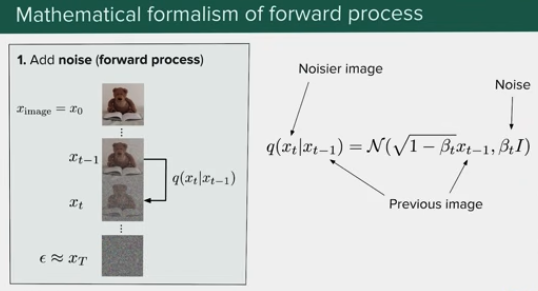
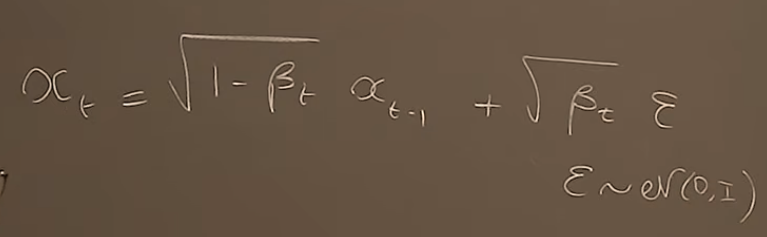
Closing the form: any t in one shot
全局概率分布：
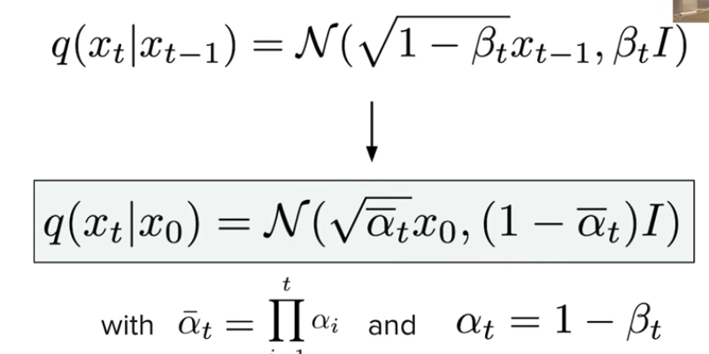
Why the coefficients collapse
独立高斯之和仍是高斯。iid 变量相加，因为 iid 的方差可以相加 \(\mathrm{var}(A+B) = \mathrm{var}(A) + \mathrm{var}(B)\)，这里 \(\epsilon\) 是高斯分布，系数代表标准差，我们可以直接用 \(\mathrm{std}(A+B)\) 来替换系数。
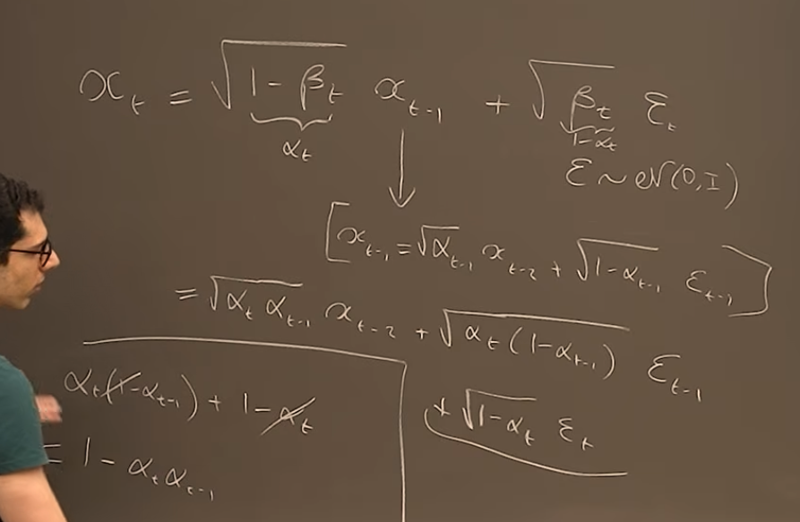
Reverse process (decoding)
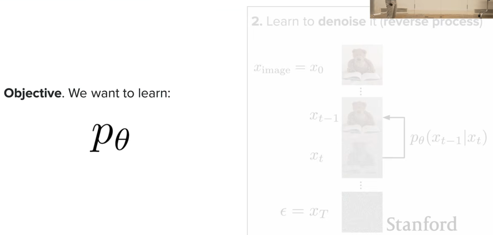
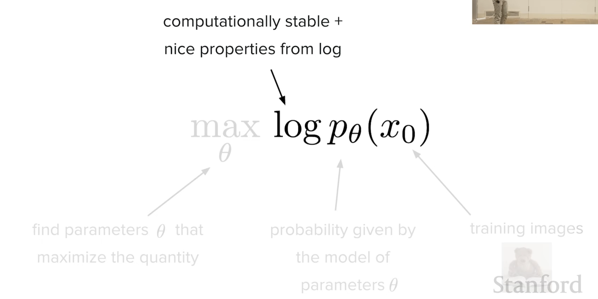
Probability refresher
conditonal p explanation:
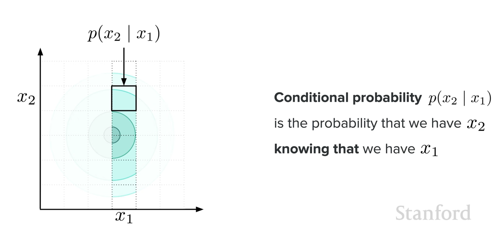
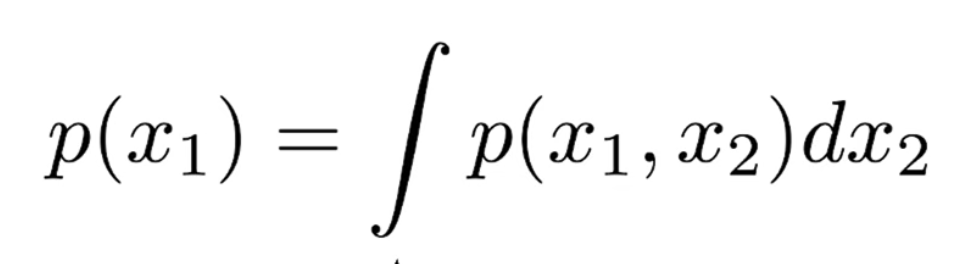
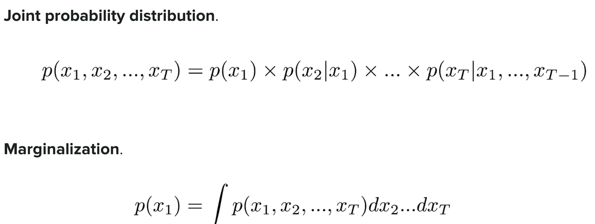
DDPM
we cannot caluclate the following to get x0:
$$ \log p_{\theta}(x_0) = \log\int p(x_0, x_{1:T})\,dx_{1:T} $$
The integral runs over every intermediate image \(x_{1:T}\) — astronomically high-dimensional, so there is no hope of evaluating it directly.
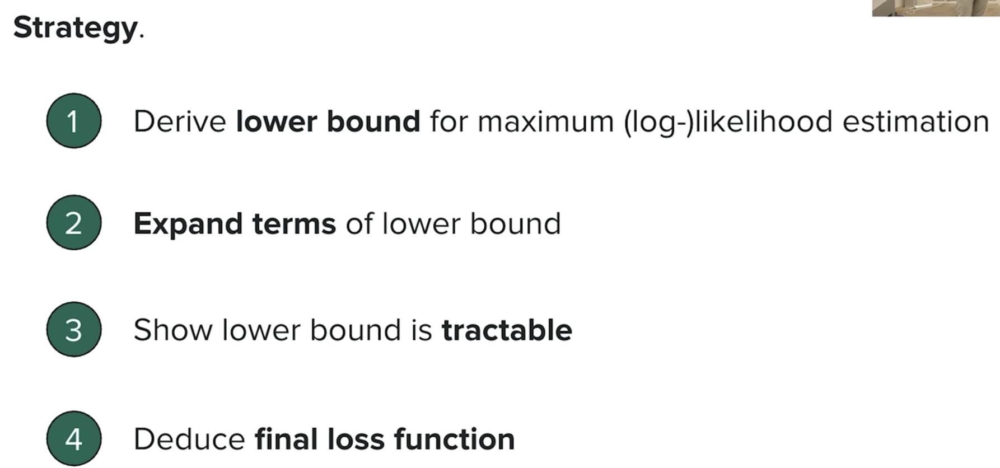
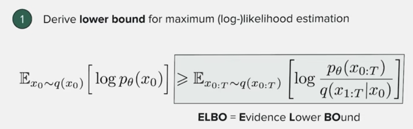
= E[log p_theta(x_{0:T}) / q(x_{1:T}|x_0)]">Derivation ELBO
when we want to calculate \(\log p_\theta(x) = \log\int p_\theta(x,z)\,dz\), it is really hard to integrate on \(z\) as \(z\) can be high dim (in the case of diffusion \(z = x_{1:T}\)).
instead, we can have:
$$ \begin{align*} \log p_\theta(x) &= \log\int q(z)\frac{p_\theta(x,z)}{q(z)}dz \\ &= \log \mathbb{E}_{z\sim q}\left[\frac{p_\theta(x,z)}{q(z)}\right] \end{align*} $$
because log is concave function，we have jensen's inequalty
$$ \begin{align*} \log p_\theta(x) &= \log \mathbb{E}_{z\sim q}\left[\frac{p_\theta(x,z)}{q(z)}\right] \\ &\geq \mathbb{E}_q\left[\log \frac{p_\theta(x,z)}{q(z)}\right] \\ &= \mathbb{E}_q\left[\log p_\theta(x,z) - \log q(z)\right] := \text{ELBO} \end{align*} $$
for KL-divergence:
$$ \begin{align*} D_{KL}\big(q(z)\,\|\,p_\theta(z\mid x)\big) &= \int q(z)\log\frac{q(z)}{p_\theta(z\mid x)}dz \\ &= \mathbb{E}_q\left[\log\frac{q(z)}{p_\theta(z\mid x)}\right] \\ &= \mathbb{E}_q\left[\log q(z) - \log p_\theta(z\mid x)\right] \\ &= \mathbb{E}_q\left[\log q(z) - \log\frac{p_\theta(z,x)}{p_\theta(x)}\right] \\ &= \mathbb{E}_q\left[\log q(z) - \log p_\theta(x,z) + \log p_\theta(x)\right] \end{align*} $$
then
$$ \text{ELBO} = \log p_\theta(x) - D_{KL}\big(q(z)\,\|\,p_\theta(z\mid x)\big) $$
Aside VAE
because \(p_\theta(x,z) = p_\theta(x\mid z)p(z)\), we can also have:
$$ \text{ELBO} = \mathbb{E}_q\big[\log p_\theta(x\mid z)\big] - D_{KL}\big(q(z)\,\|\,p(z)\big) $$
which is the principle of VAE (first item is the decoder reconstruction, second is to align \(q(z)\) to prior \(p(z)\)) — \(p(z)\) is usually \(\mathcal{N}(0,1)\) by default.
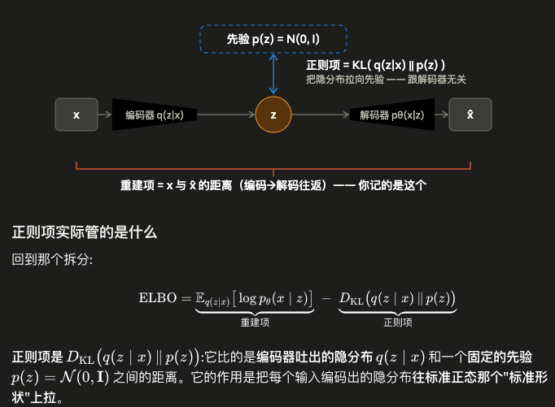
只有重建项的话，编码器会作弊：把每个训练样本塞到隐空间里某个孤零零的点、方差压到极小，等于建了张查找表 —— 重建完美，但隐空间千疮百孔，点与点之间是空的。这时你想生成新样本（从隐空间随便采个 \(z\) 再解码）就废了，因为你采到的地方模型没见过。
② Expand the terms
then
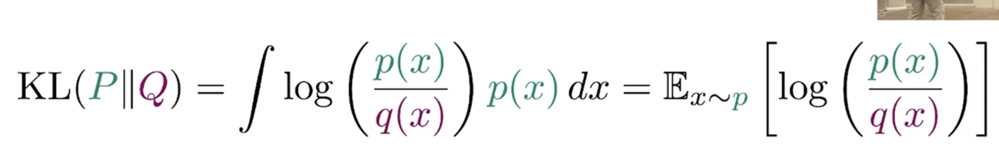
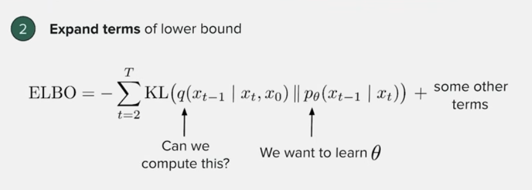
we know:
$$ q(x_t \mid x_{1:t-1}) = q(x_t \mid x_{t-1}) \quad \text{// Markov} $$
and we have:
$$ \begin{align*} q(x_{t-1}\mid x_t, x_0) &= \frac{q(x_t\mid x_{t-1}, x_0)\,q(x_{t-1}\mid x_0)}{q(x_t\mid x_0)} \quad \text{// 分母对于 } x_{t-1} \text{ 是常数} \\ &\propto q(x_t\mid x_{t-1})\,q(x_{t-1}\mid x_0) \quad \text{// multi of gaussian p is still gaussian} \end{align*} $$
③ Show the lower bound is tractable
so for the two items in ELBO:
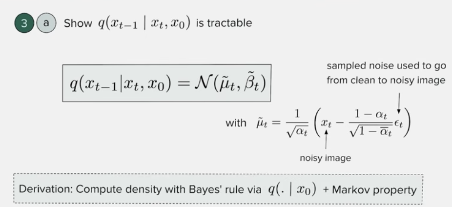
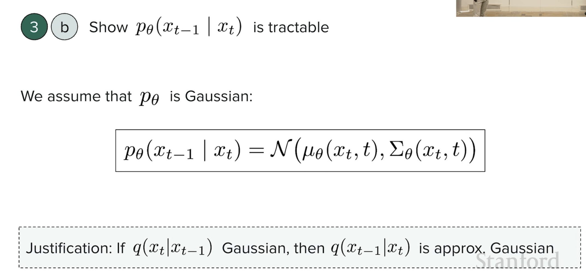
④ Deduce the loss
KL-divergence btw two Gaussians can be transfer to distance:
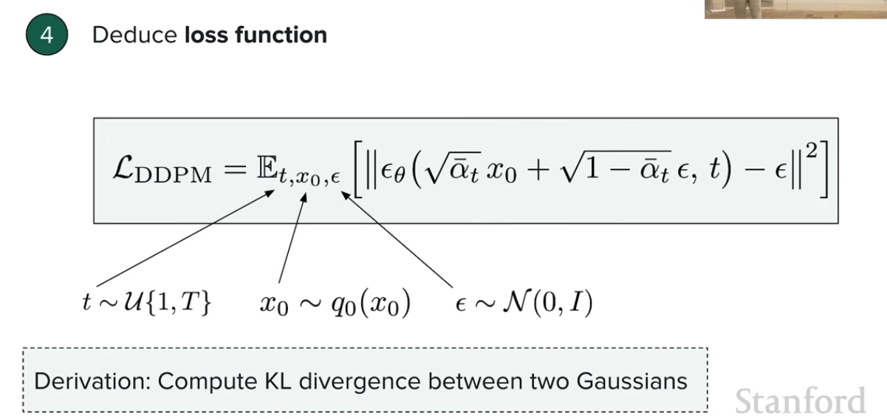
从采样式到分布式：
$$ \begin{align*} &x_t = \sqrt{\bar{\alpha_t}}\,x_0 + \sqrt{1-\bar{\alpha_t}}\,\epsilon \\ &q(x_t\mid x_0) \sim \mathcal{N}\left(\sqrt{\bar{\alpha_t}}\,x_0,\ \sqrt{1-\bar{\alpha_t}}\right) \quad \text{// 因为 } x_0 \text{ 是一时被固定的变量，所以加入概率条件} \end{align*} $$
Training
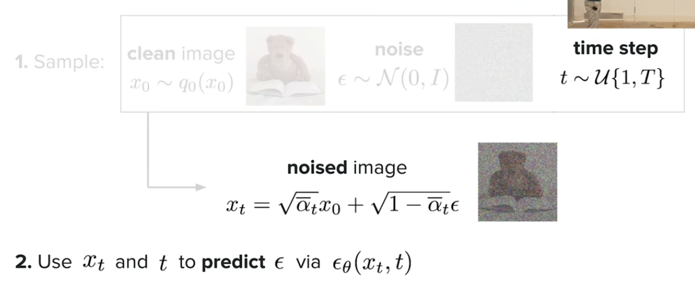
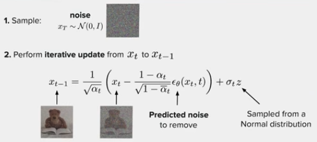
Limitation
because we are computing \(T\) times, it is too slow!
DDIM (Denoising Diffusion Implicit Models)
remember relationship between \(x_t\) and \(x_{t-1}\) here — everything below tries to take the same trajectory in fewer steps.
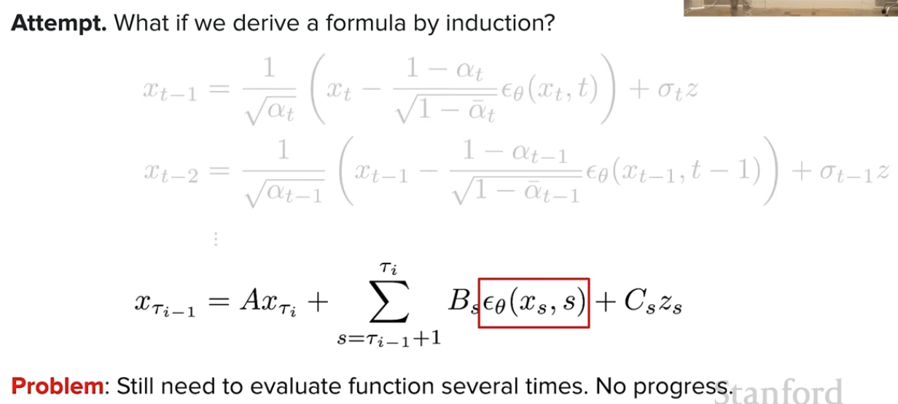
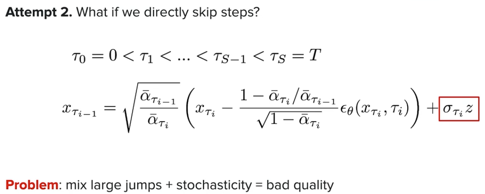
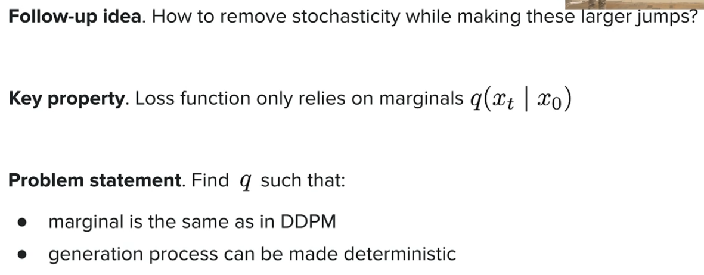
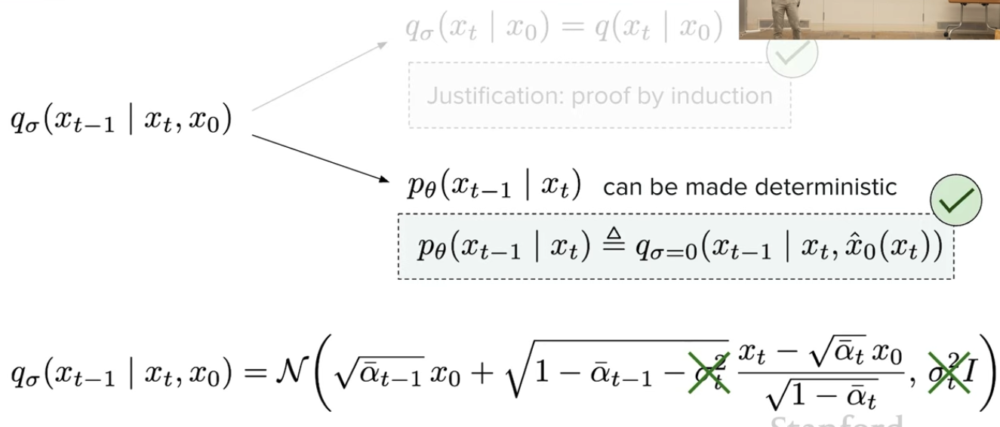
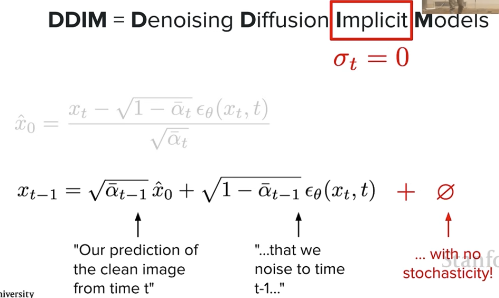
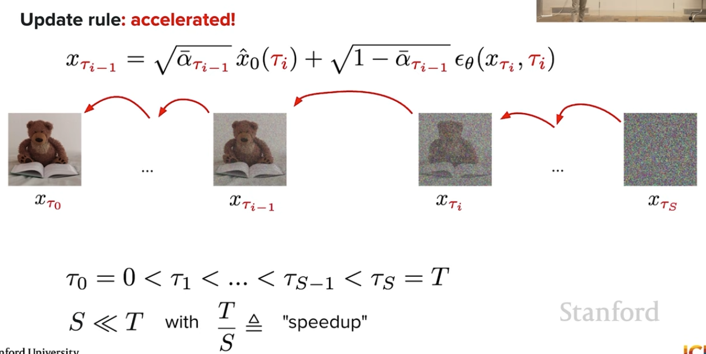
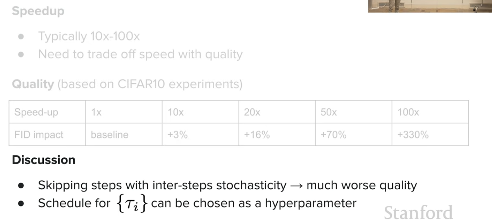
| Speed-up | 1× | 10× | 20× | 50× | 100× |
|---|---|---|---|---|---|
| FID impact | baseline | +3% | +16% | +70% | +330% |
Discussion. Skipping steps with inter-step stochasticity → much worse quality; the schedule for \(\{\tau_i\}\) is a hyperparameter.
Score matching
To do
Section left empty in the original note — fill in from the lecture recording.
Key terms
- \(q\) / forward process
- The fixed Gaussian Markov chain that adds noise. Nothing is learned here.
- \(p_\theta\) / reverse process
- The learned denoiser that walks noise back to an image.
- \(\beta_t,\ \alpha_t = 1-\beta_t,\ \bar\alpha_t = \prod_i \alpha_i\)
- Noise schedule; \(\bar\alpha_t\) is what lets you jump from \(x_0\) to any \(x_t\) in one step.
- ELBO
- Evidence Lower BOund — the tractable surrogate for \(\log p_\theta(x_0)\); equals \(\log p_\theta(x) - D_{KL}(q\,\|\,p_\theta)\).
- Noise prediction \(\epsilon_\theta(x_t,t)\)
- What the network actually outputs; the DDPM loss is squared error against the true \(\epsilon\).
- DDIM
- A non-Markovian family \(q_\sigma\) with the same marginals; \(\sigma = 0\) makes sampling deterministic and skippable.
- FID
- Fréchet Inception Distance — the sample-quality metric used to price the speedup.
Questions & follow-ups
Open question
DDPM assumes \(p_\theta\) is Gaussian because \(q(x_{t-1}\mid x_t)\) is approximately Gaussian when \(\beta_t\) is small. How badly does that approximation break with an aggressive noise schedule?
Open question
The FID table shows quality collapsing past 50×. Is that the sampler or the schedule \(\{\tau_i\}\)? Check what schedule the DDIM paper used.